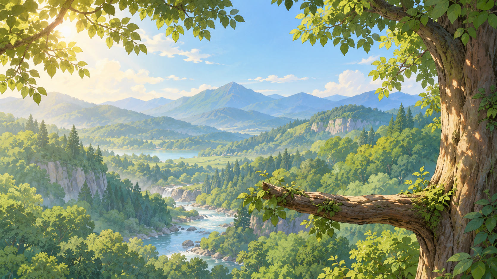

Owllowance
A sleepy companion by day. Attentive by night.

Animation demo only—these buttons do not create transactions. Reactions return to idle. Automatic uses an adjustable 06:00–18:00 daytime schedule. OS reduced-motion preferences take priority.